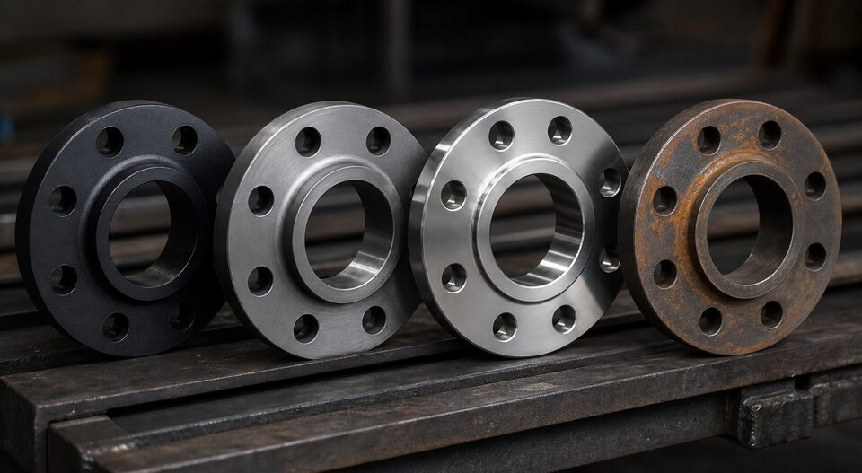

چرا متریال فلنج اینقدر مهم است؟
فلنج، نقطه اتصال و همزمان نقطه آببندی خط است. متریال آن باید هم بار مکانیکی و هم سازگاری شیمیایی با سیال را تحمل کند و در دمای کاری خواص خود را حفظ کند. انتخاب اشتباه، یا نشتی و خوردگی زودرس است یا رد شدن در بازرسی.

خانوادههای متریالی
| خانواده | گریدهای رایج | کاربرد |
|---|---|---|
| کربنی | فورج کربنی | خطوط عمومی فرایندی |
| دمای پایین | فورج ضربهخورده | سرویسهای زیر صفر |
| آلیاژی دمای بالا | کروم-مولیبدن | خطوط داغ و نیروگاهی |
| استنلس | فورج ۳۰۴/۳۱۶ و کمکربنها | سرویس خورنده و بهداشتی |
| خاص | داپلکس و نیکلبیس | سرویسهای بسیار خورنده |
اثر متریال بر فشار مجاز
جداول فشار-دما، متریالها را در گروههایی طبقهبندی کردهاند. برای یک کلاس فشاری مشخص، فشار مجاز در دمای معین بسته به گروه متریالی متفاوت است و با افزایش دما کاهش مییابد. بنابراین سهگانه «کلاس، متریال، دما» باید همزمان در استعلام ذکر شود.
تطابق با لوله و اجزای اتصال
- متریال فلنج باید با لوله همخوان باشد.
- پیچ و مهره متناسب با کلاس و متریال انتخاب شود.
- گسکت سازگار با سیال و دما باشد.
- در اتصال متریالهای متفاوت، ریسک خوردگی گالوانیکی ارزیابی شود.
گامهای انتخاب
- ماهیت سیال و الزامات خوردگی را مشخص کنید.
- دمای طراحی و کلاس فشاری را از مدارک استخراج کنید.
- خانواده متریال را انتخاب و گرید دقیق را تعیین کنید.
- فشار مجاز واقعی را از جداول فشار-دما بررسی کنید.
- گواهی مواد با شماره ذوب را در سفارش الزامی کنید.
مثالهای انتخاب در پروژه
| سرویس | متریال پیشنهادی | ملاحظه |
|---|---|---|
| خط فرایندی کربنی دمای محیط | فورج کربنی | اقتصادی و رایج |
| خط برودتی زیر صفر | فورج دمای پایین | الزام تست ضربه |
| خط بخار داغ | فورج آلیاژی متناسب با دما | کنترل جداول فشار-دما |
| سرویس خورنده عمومی | فورج استنلس ۳۰۴/۳۱۶ | گرید بر اساس سیال |
| آب دریا و کلرید بالا | استنلس مولیبدندار یا آلیاژ خاص | ارزیابی خوردگی |
مدارک و بازرسی
- گواهی مواد با شماره ذوب برای هر محموله.
- کنترل حک متریال روی فلنج در تحویل.
- در پروژههای حساس، تست شناسایی مثبت متریال.
- جداسازی انباری متریالهای مختلف.
جمعبندی
انتخاب متریال فلنج یک تصمیم مهندسی است، نه خرید صرف. با ارائه سهگانه سیال، دما و کلاس، مناسبترین و قابل دفاعترین انتخاب را دریافت کنید.
سوالات رایج
اولین گام انتخاب متریال فلنج چیست؟
شناخت سیال و دمای طراحی. ماهیت سیال (خورنده، ترش، بهداشتی) خانواده متریال را تعیین میکند و دمای طراحی، گرید دقیق را. فشار مجاز واقعی نیز از ترکیب متریال و دما به دست میآید.
چرا متریال فلنج بر فشار مجاز اثر دارد؟
جداول فشار-دما برای هر گروه متریالی تعریف شدهاند؛ یک کلاس فشاری با متریالهای مختلف، فشار مجاز متفاوتی در دمای مشخص دارد. بنابراین ذکر کلاس بدون متریال و دما کامل نیست.
فلنج را با چه جزئی همجنس کنیم؟
با لوله و تا حد امکان با سایر اجزای اتصال. تفاوت متریالها در یک اتصال باید در طراحی ارزیابی شود؛ به ویژه از نظر خوردگی گالوانیکی و رفتار دمایی.
رایجترین اشتباه در استعلام فلنج چیست؟
ذکر کلاس فشاری بدون دمای سرویس، یا انتخاب متریال فقط بر اساس قیمت. هر دو میتوانند به تحویل کالای نامنطبق یا انتخاب غیرایمن منجر شوند.
مطالب مرتبط
- استاندارد فلنجهای جوشی (ASME B16.5)
- فولاد فورج کربنی (ASTM A105)
- مقایسه فورج دمای محیط و دمای پایین
- فورج استنلس (ASTM A182)
- راهنمای انواع گسکت صنعتی
با ارائه سیال، دمای طراحی و کلاس فشاری، متریال مناسب فلنج به همراه گواهی مواد کامل پیشنهاد میشود.
مشاهده صفحه محصول ← ثبت RFQ همین محصولتامین این تجهیزات را به پیشرو تجهیز فرتاک بسپارید
شرکت پیشرو تجهیز فرتاک تامینکننده تخصصی تجهیزات صنعتی برای پروژههای نفت، گاز، پتروشیمی، فولاد و نیروگاهی است. برای دریافت پیشنهاد فنی و قیمت، استعلام (RFQ) خود را ثبت کنید تا کارشناسان مهندسی فروش در کوتاهترین زمان پاسخ دهند.
- تامین فلنجکربنی، دمای پایین، آلیاژی و استنلس با گواهی مواد
- تامین تجهیزات پایپینگگسکت و پیچ و مهره هماهنگ با فلنج